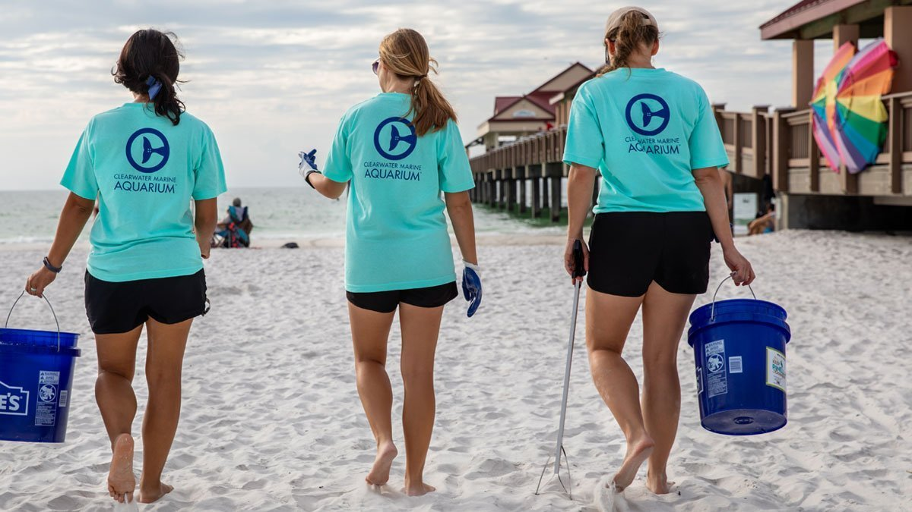
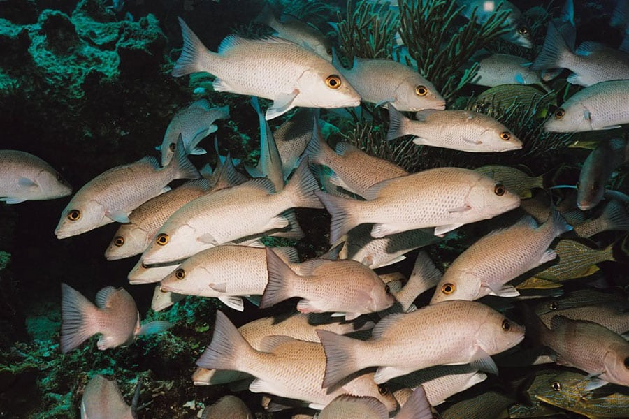
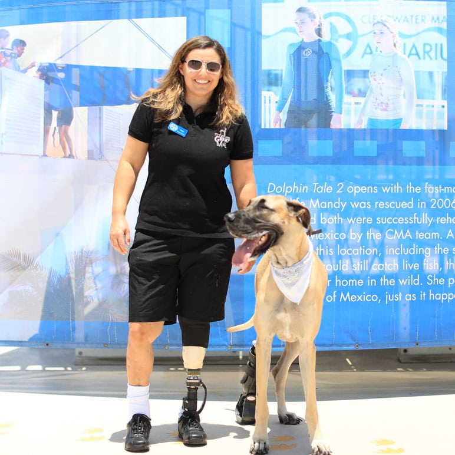
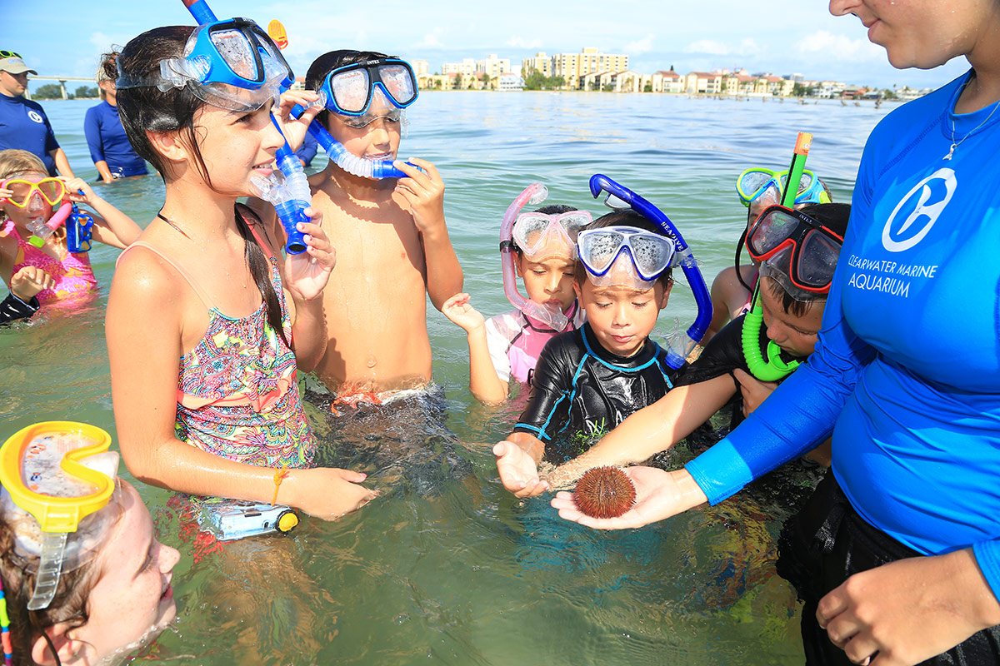

PROTECT MARINE LIFE
Clearwater Marine Aquarium
05/20/2021
Clearwater Marine Aquarium often hosts coastal cleanups around Clearwater Beach and the nearby causeway to encourage community involvement and protect local marine life.
During one cleanup, volunteers collected nearly 900 pounds of trash in just two hours!
While it is disheartening to see that this much trash is compiled on our local waterways, it is very rewarding to see a community come together to make a difference for the home we share with local wildlife. These cleanups have a huge impact on the well-being of our bay, but it doesn’t take a large event to make a difference. There are many ways to help conserve the ocean, starting in your own backyard! Here’s a list of some ocean-friendly habits to get started!
1. Pick Up Trash, and Reduce, Reuse & Recycle Plastic
One of the big reasons animals arrive at our hospital is due to pollution. Turtles mistake plastic bags for jellyfish, birds get entangled in fishing line, and animals get stuck in plastic wrappings. These are all things that can easily be avoided by simply disposing of our trash correctly, recycling and reducing plastic use. Picking up any trash you see can help, and if you are feeling extra ambitious you can even organize your own cleanup. Spending a beautiful day on the beach, surrounded by friends, all while saving the ocean, what could be better than that?
2. Conserve Water
Did you ever consider that saving the environment could also save you money as well?! It sure can, by following a couple easy steps; your average monthly water bill can be greatly reduced. Checking for leaks consistently, not running water while completing tasks like brushing your teeth, changing out showerheads to a low flow model, and even reusing water for things like watering the plants has the ability to not only save water but your pocketbook as well.

3. Use Environmentally-Friendly Products
Clean for us, doesn’t necessarily mean clean for the environment. While doing dishes, laundry, and disinfecting your house, it is important to keep in mind where all of the products you are using end up once they go down the drain. Although water treatment plants are able to minimize the effect of these chemicals, it is always a good idea to use environmentally-friendly cleaning products. Along with that, there are a lot of homemade natural ways to clean your home as well. With these 10 products on hand, your home will be ready for any dirty situation!
White Vinegar: Can be used to kill germs and bacteria.
Baking Soda: Eliminates odors and works a gentle scouring powder
Borax: Removes dirt, eliminates odors, and acts as an antifungal and disinfectant.
Hydrogen Peroxide: A non-toxic bleach and stain remover, and disinfectant.
Club Soda: A stain remover and polisher.
Lemon Juice: A non-toxic bleach, grease- cutter, and stain remover that smells great too!
Corn Meal: Works perfect to absorb carpet spills!
Olive oil: Can be used as a furniture polish.
Pure Essential Oils: These can be added to your homemade cleaning supplies to add a nice fragrance!
Don’t forget about your personal care items like toothpaste, face scrubs and other cosmetics. These all go down the drain, too! Use eco-friendly products when possible and avoid any products with microbeads, which are tiny plastic particles that end up as a big microplastic problem in the ocean.
4. Know Where Your Food Comes From
Another way to help the ocean is by paying attention to where your seafood comes from. While it may seem as if the ocean is abundant and full of a never-ending supply of fish, this may not always be the case. Due to overfishing, a lack of environmental-minded management, and our own consumption habits, our fish populations are declining. Not only is this a problem for the fish themselves, but also to the communities that rely on the fishing industry for their income. In order to ensure that these fish populations thrive, and fishermen continue to have jobs, there are easy steps we can take!

One of the simplest things the public can do is ask local grocery stores and restaurants if they sell sustainable seafood. If consumers make it known that sustainable food is what they are going to buy, eventually that is what stores will sell! Another easy thing to do is to download a sustainable seafood app! These interactive apps give you recommendations for places near you that serve sustainable food, search for seafood quickly by its common market name, and allow access to notes and reports on conservation.
5. Be an Ocean-Friendly Pet Owner
While it is common courtesy to pick up after your pet, it can also help save the ocean! Dogs and cats produce 10 million tons of waste each year in the U.S. alone. This waste can be harmful to water supplies. When it rains, that carries the waste into rivers, beaches and bays introducing harmful bacteria to those areas. If the amount of bacteria gets too high it could be unsafe for drinking and swimming. An easy fix is to always pick up your pets’ waste! There are even biodegradable poop bags available, to minimize the use of plastic.

As for all of the cat lovers, it is important to know which litter to purchase. Some cat litters contain carcinogenic silica dust that can even be harmful to your cat. Buying eco-friendly cat litter can eliminate the risk for your cat, and the ocean. And another important thing to remember is never flush your pet’s waste down the toilet! That leads it directly to the water.
6. Get Involved, Go Outside!
There is no better way to learn than through experience. If you are interested in the world’s oceans and wildlife in them, get involved with your local conservation organization. No matter what age you are, there are activities for everyone! At CMA, we offer summer camps, volunteer positions, and internships. We know that everyone has busy schedules, but getting involved is very rewarding and offers unique experiences. Volunteering allows you to meet new people and connect with your community on a deeper level and allows you to share your new-found knowledge with everyone. And if you’re unable to volunteer, just visiting your local nature centers is a wonderful way to support these causes.
Even if you aren’t the adventurous type, it’s always a good idea to go outside! When people think of adventure, they often think of traveling to far off places, but we often forget the beauty in our own backyards. Living in Florida, we have a myriad of activities that allow you to learn about the ocean. Whether you go snorkeling, scuba diving or swimming, having the ocean so close gives us the unique opportunity to see its wildlife up close. The more we go out into nature, the more connected we are with it, leaving us more determined to conserve the world we love.

......................................